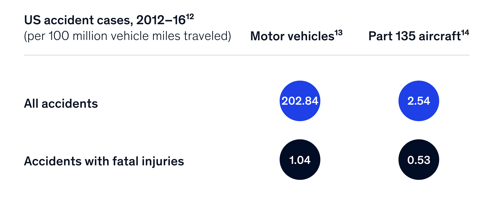

Flying vehicles have long tantalized our imagination, as evidenced by films such as Metropolis and Blade Runner and the cartoon series The Jetsons. Yet I think they will stay in our imagination for some time to come. In lightweight applications—for example, sensing and small parcels—UAVs can indeed play a big role in sparsely populated areas and in cities. But there are various physical and practical reasons why our city skies will not be filled with delivery UAVs anytime soon.
Let’s consider the physics. A huge amount of energy is required to lift a heavy object vertically into the air, creating a vast amount of noise and air disturbance. In dense cities such as New York, an overwhelming percentage of all goods is delivered via trucks. Each day, approximately 25,000 delivery trucks and commercial vehicles move into, around, and out of Manhattan.¹ If even just 5 percent of those vehicles were replaced by drones, that would mean 1,250 UAVs—the largest helicopters—dotting the skies.
There is also the issue of safety. Even with the new lithium-metal batteries, which have twice the energy density of—and more stable performance than—conventional lithium-ion batteries, moving substantial quantities of goods overhead presents a recurring safety hazard. Modern trucks may be noisy, but a dead battery or a broken rotor blade in a delivery drone used for urban deliveries could cause it to fall onto a densely populated area.
Even if we used UAVs only for lightweight deliveries, thus allowing the use of smaller drones that pose a less significant safety risk, we would find ourselves with tens of thousands of vehicles in the sky. How could we ensure these flying objects were protected from hackers, terrorists, and other criminals? How might air traffic control systems safely coordinate their intersecting journeys?
Of course, these challenges do not signal the end outright or new delivery options or UAVs. However, in densely populated cities, the challenge of achieving faster and more efficient last-mile deliveries could probably be better fixed in other ways by rotors planted firmly on the ground. For these reasons, I do not believe UAVs will gain traction and claim a significant share of urban deliveries by 2030.
Debate: Will delivery UAVs scale by 2030?
Motion:
For: Will Hetzler,
Against: Carlo Ratti,
Unmanned aerial vehicles (UAVs) will gain traction and claim a significant share (1 to 5 percent) of urban deliveries by 2030.
Cofounder, Zipline International
Director, SENSEable City Lab; Professor of Urban Technologies and
Planning, MIT
UAVs, commonly known as drones, are a hot topic of debate. Will they become ubiquitous? How can safety concerns be addressed? How should they be regulated? McKinsey asked two professionals close to the issue to weigh in on whether they believe UAVs will gain traction and claim a significant share of urban deliveries by 2030. Below, Will Hetzler and Carlo Ratti share their initial arguments and then respond to each other’s claims.
Opening statement
Drones provide a unique combination of flexibility, efficiency, and speed. Logistics systems need these capabilities to meet growing demand for residential deliveries as consumer expectations set by online shopping spread to sectors outside retail, such as healthcare. This demand will lead to drones being used for a significant share of urban deliveries by 2030.
Drones’ advantage in the United States is strongest for B2C deliveries, such as healthcare products, small online purchases, and food. Traditional ground transportation is optimized for B2B deliveries and fails to adequately serve many new B2C business models recently enabled by technology. B2C deliveries are already a majority of the package volume in the United States and are growing faster than B2B deliveries, making the opportunity for drones significant.² Drones can meet the demand of consumers for faster delivery and also give consumers more control over the time and location of delivery.
Due to technical and regulatory constraints, drones are best suited to small-package delivery. Barring a breakthrough in energy storage, this will remain true in 2030. While this might be viewed as a limitation, B2C deliveries trend small. For example, 86 percent of the items that Amazon ships weigh less than five pounds.³ And the demand for such small-package delivery is increasing rapidly.⁴
Today, drones most easily deliver to single-occupancy, detached structures. While this type of development is often associated with suburban and rural areas, single-family, detached homes make up approximately 60 percent of the housing units in America’s largest metropolitan areas.⁵ Consequently, while drone delivery may be impractical in Manhattan, most US metropolitan areas are readily serviceable with current drone technology. As technology continues to improve over the coming decade, the proportion of urban addresses that are serviceable by drones will only increase.
Opening statement

We both agree that drones are not likely to work in the densest urban areas. And we also agree that they could indeed play a role in rural areas and in places where the road infrastructure is not fully developed—especially for time-sensitive or medical deliveries. However, we disagree about the ability to scale in urban areas.
To Will’s point that drones combine flexibility, efficiency, and speed, I would argue
that safety and reliability are more important than any of these factors. And there is a simple reason why drones are much less reliable and safe than any vehicle on wheels: weather.
Most of us have experienced commercial flights being canceled because of weather. A common thunderstorm can ground a light aircraft with a mass that’s three or four orders of magnitude larger than a drone. Air movement of just a few meters per second could be enough to send small drones bumping into buildings or falling from the sky.
In China, drones are used in remote rural locations to ship parcels. Despite having some of the loosest regulations for UAVs in the world, the local civil aviation authority does not allow drones to fly under circumstances in which the use of a car or even a bike would not be questioned, including through rain, light wind, and darkness.⁶ While it’s possible that new sensors might combat the darkness issue in the future, the problems with rain and wind are based on physics and therefore unlikely to be resolved.
How will drones perform in metropolitan areas such as Vancouver or Amazon’s home, Seattle, both respectively known as “Rain City”? The first week of May 2019 in Boston was marked by near-constant rain—what would have happened to time-sensitive deliveries? Such unreliable conditions make it unlikely that we will be able to scale drone delivery in the near future.
A majority of the items Amazon ships weigh less than five pounds, as Will points out, while typically hundreds or even thousands of such small parcels are packed together on the same truck and delivered with clear efficiencies of scale. Meanwhile, lightweight drones are unlikely to be able to transport much more weight than one or two pairs of shoes, thus forcing them to return to the base to collect the next parcel. As a result, the total number of required trips would need to be multiplied by two or three orders of magnitude, generating congestion in the skies.⁷ Not to mention, these small drones would be much more sensitive to even mildly adverse weather. Such conditions would hinder speed and efficiency and make it difficult to scale.⁸
I believe UAVs indeed offer interesting solutions for mobility and logistics in the future—especially for remote locations. But I am still skeptical about their ability to scale in cities.
Rebuttal
It’s easy to agree on what the future of drones in cities is not. Large drones capable of transporting a full truckload are unlikely to make many urban deliveries within the next ten years. And drones of any size may be impractical delivery vehicles in the densest urban environments in this time frame. However, there is a real opportunity for urban drone delivery of small packages in the vast majority of cities.
The technical capability exists today for residents of most cities to routinely receive deliveries by drone, and a decade is plenty of time for new technology to transform the industry. For an example of how quickly urban transportation can change, consider ridesharing, which has only existed for around ten years but now accounts for significantly more annual rides than taxis.⁹
As Carlo notes, the safety of urban drone delivery is an important topic, and many questions must be answered before urban drone delivery can reach scale. For example, cybersecurity is a concern for drones, just as it is for all transportation technologies, including in cars and trucks. How to coordinate drone traffic is another concern. Fortunately, academics, regulators, and private industry experts have started working on these issues and are making fast progress.¹⁰
It is important to note that delivery drones differ dramatically from the recreational drones flown by hobbyists. Performance standards and rigorous testing ensure that delivery drone designs are safe. I believe the FAA would never allow commercial operation of a delivery drone that could fall out of the sky due to a dead battery or broken rotor blade. The aviation industry has a long-standing practice of designing redundancy into safety-critical systems, and commercial drone companies use this same approach. Delivery drones are also already safely operating in heavy rain and turbulent winds greater than 60 miles per hour.
In the United States, the FAA certifies drone delivery operators under the same part of the Code of Federal Regulations as manned air carriers that provide commuter, on-demand, and cargo flights, commonly referred to as “Part 135 operators.”¹¹ Consequently, drone delivery operators are held to equivalent safety standards. While it’s difficult to directly compare safety statistics for different transportation modes, ground transportation has significantly higher accident rates than Part 135 operators and roughly double the number of accidents involving fatalities.
Rebuttal
“Off-Hour Deliveries (OHD) Program,” New York City Department of Transportation, accessed May 21, 2019, www1.nyc.gov.
Strong today: Creating our tomorrow, UPS 2018 annual report, investors.ups.com.
Jeff Bezos, “Amazon’s Jeff Bezos Looks to the Future,” interview by Charlie Rose, 60 Minutes, CBS, December 1, 2013, transcript, 6.
Strong today: Creating our tomorrow, investors.ups.com.
2017 American housing survey, United States Census Bureau, census.gov. All occupied units for 43 listed
metropolitan areas.
“China is on the fast track to drone deliveries,” Bloomberg, July 3, 2018, bloomberg.com.
Drones’ lift force is generated by moving large volumes of air downward, which means they cannot fly on the top of one another (unless at large distances). This effectively restricts the use of space as it relates to vertical dimensions and could exacerbate congestion issues in the future.
A standard last-mile delivery truck can carry a volume of approximately 12 square meters with a ground footprint of approximately 10 square meters. Amazon’s large, standard-size truck has the following specs: maximum weight of less than 20 pounds and maximum dimensions of 18 x 14 x 8 inches. This means that the load of just one truck would need at least 380 drones to be delivered—and more than 1,000 if parcels are smaller (closer to 5 pounds).
Johana Bhuiyan, “Ride-hail apps like Uber and Lyft generated 65 percent more rides than taxis did in New York in 2017,” Recode, March 15, 2018, recode.net.
For instance, the FAA and NASA are collaborating with the aviation industry to develop unmanned aircraft system
traffic management (UTM) to assist with coordinating the high volume of advanced drone operations that will come in
the near future.
The full definition of 14 CFR Part 135 operations is complex but covers the following: air ambulance and commercial helicopter operations, on-demand cargo flights on airplanes with a maximum payload capacity of 7,500 pounds, air taxi and charter flights on airplanes with seats for a maximum of 30 passengers, and scheduled commuter flights on airplanes with seats for a maximum of nine passengers.
The most recent five-year period for which federal safety statistics are publicly available.
Traffic safety facts: A compilation of motor vehicle crash data from the fatality analysis reporting system and the general estimates system, U.S. Department of Transportation, 2016, crashstats.nhtsa.dot.gov.
Figures are based on US civil aviation accident statistics from 2012 to 2016, National Transportation Safety Board, ntsb.gov; and US air carrier traffic statistics from 2012 to 2016, Bureau of Transportation Statistics, bts.gov.
Carlo Ratti
Director, SENSEable City Lab; Professor of Urban Technologies and Planning, MIT
Will Hetzler
Cofounder, Zipline International
Carlo Ratti, MIT
Will Hetzler, Zipline
¹
²
³
⁴
⁵
⁶
⁷
⁸
⁹
¹⁰
¹¹
¹²
While drones will deliver pizzas and small online purchases in the near future, the primary social benefit of drone delivery is in healthcare. Drone delivery has the potential to affordably provide every human on Earth with near-instant access to vital medical supplies, regardless of whether they live in a city or a rural community. Such delivery will reduce the logistical burden of managing chronic health conditions, enable more home-based acute care, and avert hospitalizations and trips to the emergency room. This is a vision for drone delivery that excites me, and it’s a future that our team at Zipline is working to build.
¹³
¹⁴
The SENSEable City Lab is a research initiative at MIT that studies and anticipates the impact of technology on urban residents and environments.
Zipline is a drone-delivery company that supplies essential medical products to underserved communities.
Cofounder, Zipline International
Director, SENSEable City Lab; Professor of Urban Technologies and
Planning, MIT
Copyright © 2019 McKinsey & Company. All rights reserved.
Back to top


Back to top